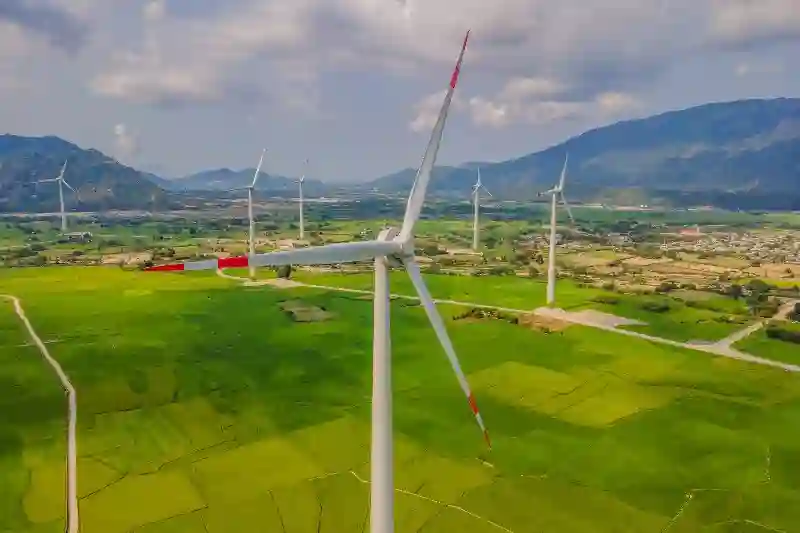
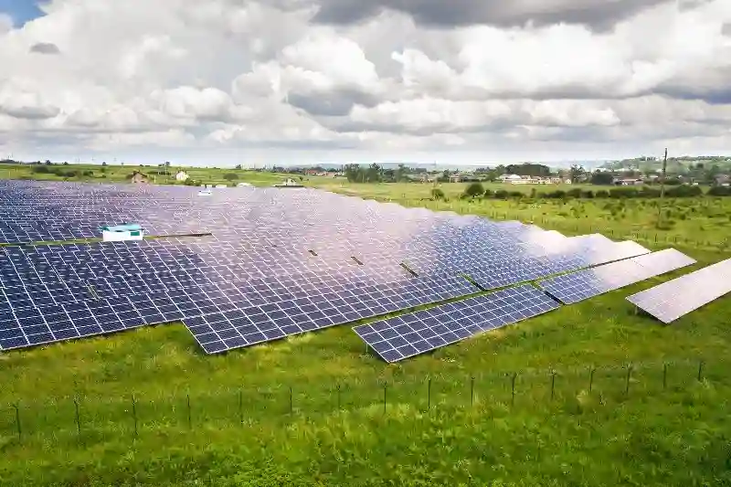
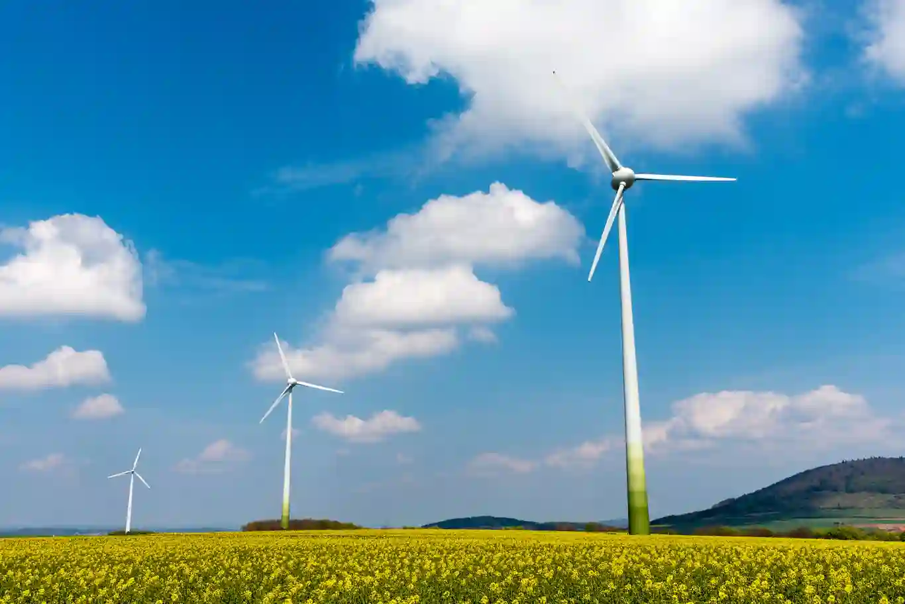
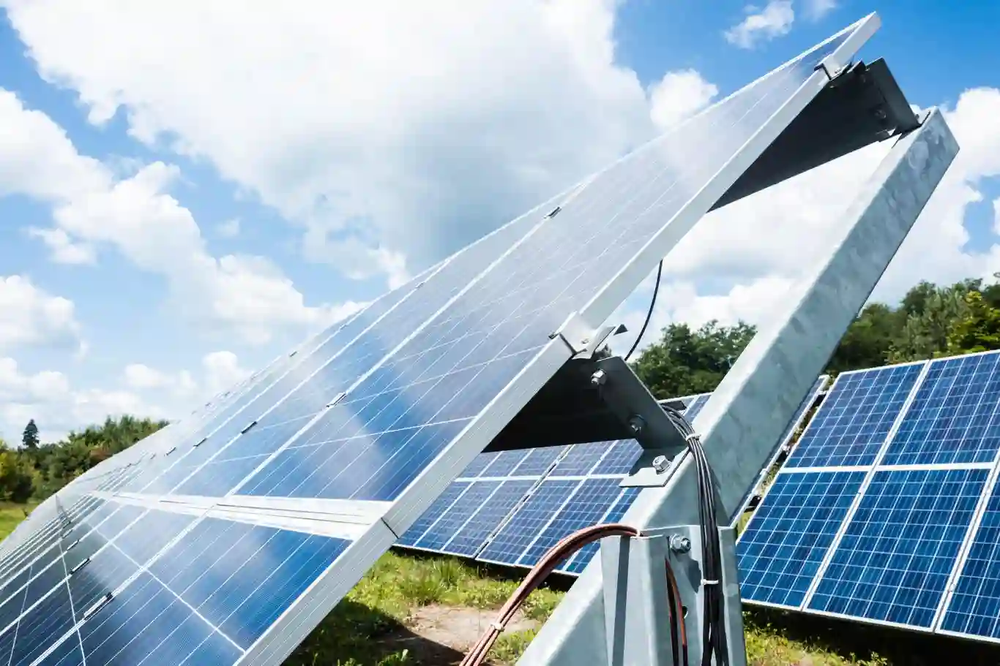

Enerji ve Yenilenebilir Sistemler İmalatıAymaksan Makine Üretim Çözümleri
Günümüz enerji ekosisteminde sürdürülebilir üretim, yüksek verimli bileşenler ve uzun ömürlü mekanik parçalar, yenilenebilir enerji yatırımlarının başarısını doğrudan etkileyen kritik unsurlar hâline gelmiştir. Aymaksan Makine, bu bilinç doğrultusunda enerji ve yenilenebilir sistemler imalatı alanında mühendislik gücü, gelişmiş makine parkı ve hassas seri üretim kabiliyetiyle sektörün artan ihtiyaçlarına kapsamlı çözümler üretmektedir. Rüzgar, güneş, enerji depolama ve güç iletim sistemlerine yönelik metal işleme süreçleri, firmamızın talaşlı imalat tecrübesiyle birleşerek yüksek performanslı, dayanıklı ve proje gereksinimlerine tam uyumlu ürünlerin ortaya çıkmasını sağlar.
Aymaksan Makine’nin üstün üretim altyapısı; CNC dik işleme, CNC torna, kayar otomat, ileri seviye TIG ve gazaltı kaynak uygulamaları, montaj süreçleri ve kalite kontrol teknolojileriyle desteklenmektedir. Bu sayede, yenilenebilir enerji bileşenlerinin hem prototip hem de seri üretim aşamalarında güvenilir, hassas ve uzun ömürlü çözümler sunulmaktadır. Aynı zamanda sektörde rekabetçi olmanın ana koşulu olan malzeme dayanımı, yüzey hassasiyeti, tolerans tutarlılığı ve güvenlik standartları, üretimin temel prensipleri olarak ele alınmaktadır.
Bu sayfanın amacı, enerji sektörünün farklı alt alanlarında yer alan üretim gereksinimlerine nasıl çözüm sunduğumuzu detaylı biçimde açıklarken aynı zamanda firmamızın yenilenebilir enerji sistemlerine sunduğu mekanik, yapısal ve teknik katkıyı tüm boyutlarıyla görünür kılmaktır.
Yenilenebilir Enerji Ekipmanları Özel İmalatı
Yenilenebilir enerji projeleri, her biri farklı çevresel koşullara, yapısal gereksinimlere ve teknik dinamiklere sahip oldukça geniş bir mühendislik çeşitliliği barındırır. Bu nedenle enerji ve yenilenebilir sistemler imalatı,yenilenebilir enerji ekipmanları özel imalatı, standart üretim süreçlerinden daha ileri bir yaklaşım gerektirir. Aymaksan Makine, bu alanda geliştirdiği üretim modelini enerji sektörünün değişken proje tiplerine uygun şekilde konumlandırmaktadır.
Güneş enerjisi montaj ekipmanları, panel taşıyıcı konstrüksiyon bileşenleri, rüzgar türbini gövde parçaları, rotor bağlantı elemanları, inverter gövdeleri, enerji depolama sistem kasaları ve güç iletim altyapısında yer alan çeşitli çelik aparatların üretimi, firmamızın yenilenebilir enerji sektörüne sunduğu hizmetlerin temelini oluşturur. Bu kapsamda kullanılan malzemeler arasında paslanmaz çelik, alüminyum, özel alaşımlar ve yüksek dayanımlı mühendislik çelikleri yer alır.
Üretim süreçlerinde tolerans doğruluğu, yük taşıma kapasitesi, titreşim dayanımı ve çevresel şartlara karşı direnç, tasarım aşamasından son kalite kontrol noktasına kadar sürekli takip edilir. Böylece yenilenebilir enerji ekipmanları özel imalatı, yalnızca bir üretim başlığı değil aynı zamanda her proje için özel optimize edilmiş bir mühendislik süreci hâline gelir.


Rüzgar Türbini Parçaları CNC İşleme Hizmeti
Rüzgâr enerjisi projelerinde mekanik dayanıklılık, sistem verimi ve yüksek güvenlik standartları kritik önem taşır. Bu nedenle rüzgar türbini parçaları CNC işleme hizmeti, yenilenebilir enerji sektöründe ve enerji ve yenilenebilir sistemler imalatı için en yüksek hassasiyet gerektiren üretim alanlarından biridir. Türbinlerin uzun yıllar boyunca yüksek rüzgar yüklerine dayanabilmesi, bağlantı elemanları ile taşıyıcı bileşenlerin kusursuz işlenmesini gerektirir.
Aymaksan Makine, CNC dik işleme merkezleri ve yüksek kapasiteli yatay CNC torna tezgâhları ile türbin tekerlekleri, gövde bağlantı parçaları, flanşlar, mil yuvaları, kasnak bileşenleri, yatak yuvaları ve birçok kritik metal parçanın üretiminde yüksek doğrulukla çalışmaktadır. Özellikle DAHLIH MCV-1450 ve PUMA 280L gibi tezgâhların sağladığı yüksek rijitlik, güçlü motor yapısı ve gelişmiş frezeleme-tornalama kabiliyeti, rüzgar türbini bileşenlerinde mükemmel bir yüzey kalitesi ve ölçü kararlılığı elde edilmesine olanak tanır.
Dahası, rüzgar türbini parçalarının tasarımdan üretime geçiş sürecinde Aymaksan Makine, mühendislik birimleriyle iş birliği yaparak proje dosyalarını detaylı biçimde analiz eder. Bu analiz doğrultusunda en uygun kesme parametreleri, takım yolları, bağlama stratejileri ve işleme toleransları belirlenir. Sonuç olarak rüzgâr türbini parçaları CNC işleme hizmeti, sektörün beklentilerini aşan bir kalite düzeyi yaratır.
Aymaksan Makine, yenilenebilir enerji projeleri için yüksek hassasiyette enerji sektörü talaşlı imalat çözümleri sunarak üretim süreçlerinin güvenilirliğini artırmaktadır.

Projeni Başlat
Güneş Enerjisi Montaj Aparatları Talaşlı İmalatı
Güneş enerjisi sektöründe kullanılan konstrüksiyon sistemleri, panel taşıyıcı aparatlar, bağlantı elemanları ve özel montaj bileşenleri, hem yük taşıma kapasitesi hem de çevresel dayanım açısından yüksek mühendislik gerektiren kritik parçalardır. Aymaksan Makine tarafından uygulanan güneş enerjisi montaj aparatları talaşlı imalatı, yenilenebilir enerji yatırımlarının uzun ömürlü ve yüksek performanslı şekilde çalışmasını sağlayacak nitelikte bir üretim yaklaşımını temsil eder.
Güneş panelleri, sürekli olarak sıcaklık değişimlerine, rüzgâr yüklerine ve çevresel etkilere maruz kaldığından kullanılan mekanik aparatların yüksek dayanım standartlarında üretilmesi zorunludur. Bu bağlamda, alüminyum ve yüksek mukavemetli çelik alaşımları üzerinde yürütülen işleme süreçlerinde hassas toleranslar korunur, yüzey kalitesi optimize edilir ve montaj uyumluluğu tam olarak sağlanır. Özellikle CNC frezeleme ve dik işleme merkezlerinin sağladığı yüksek hassasiyet, panel alt taşıyıcı blokları, ray bağlantı parçaları, kelepçe türü bağlantı aparatları ve özel tasarımlı mekanik bileşenlerin imalatında önemli avantaj yaratır.
Aymaksan Makine, mühendislik ekiplerinden gelen teknik çizim dosyalarını analiz ederek en uygun işleme stratejilerini belirler; takım yolları, bağlama noktaları ve talaş kaldırma parametreleri üretim boyunca optimize edilir. Böylece güneş enerjisi montaj aparatları talaşlı imalatı ve enerji ve yenilenebilir sistemler imalatı sadece bir üretim faaliyeti değil aynı zamanda enerji sektörüne kalite, dayanıklılık ve uzun vadeli performans sağlayan bir teknoloji süreci hâline gelir.

Enerji Depolama Sistemleri Metal Komponent Üretimi
Enerji dönüşümünün önemli ayaklarından biri olan depolama teknolojileri, mekanik ve termal dayanımın son derece kritik olduğu yapısal bileşenlere ihtiyaç duyar. Batarya kasaları, hücre modül çerçeveleri, güç yönetim sistemlerinin mekanik altyapıları, bağlantı elemanları ve özel muhafaza gövdeleri, enerji depolama sistemlerinin sorunsuz çalışması için büyük önem taşır. Bu nedenle enerji depolama sistemleri metal komponent üretimi, yüksek hassasiyet gerektiren özel bir imalat disiplinidir.
Aymaksan Makine, enerji depolama sektörünün artan taleplerine cevap verebilmek adına CNC tornalama, CNC frezeleme, TIG kaynak, gazaltı kaynak, ince sac işleme ve özel montaj uygulamalarıyla geniş bir üretim kapasitesi sunmaktadır. Üretilen parçaların kullanım alanları arasında batarya paketleri, inverter kutu bileşenleri, ısı yönetim sistemlerinin çerçeve yapıları, enerji kontrol modülü kasaları ve özel mühendislik çözümleri yer alır.
enerji depolama sistemleri metal komponent üretimi, mekanik zorlanmaların yoğun olduğu ortamlarda yüksek dayanım sağlayacak şekilde optimize edilir. Özellikle yüksek akım taşıyan modüllerde kullanılan metal parçaların yüzey işleme kalitesi, termal dağılım kapasitesi ve geçme uyumluluğu titizlikle kontrol edilir. Bu noktada Aymaksan Makine’nin kalite kontrol süreçleri devreye girerek CMM ölçüm cihazları, yüzey pürüzlülüğü analizleri ve tolerans doğrulama yöntemleri ile her bir parçanın standartlara uygunluğu eksiksiz şekilde belgelenir.
Enerji Altyapısı Bağlantı Parçaları CNC Üretimi
Enerji iletim ve dağıtım sistemleri, çok geniş bir mekanik bileşen çeşitliliğine sahiptir. Direk bağlantı aparatları, kablo taşıyıcı metal yapılar, iletim sistemi kelepçeleri, montaj plakaları, çelik hat destek elemanları ve güç iletim hattı bağlantı parçaları bu kategoriye girer. Bu parçaların tamamı güvenlik açısından kritik olduğundan enerji altyapısı bağlantı parçaları CNC üretimi, hem tolerans doğruluğu hem de malzeme dayanımı bakımından en yüksek standartları gerektirir.
Aymaksan Makine, yüksek dayanımlı çelik alaşımlarının işlenmesinde uzmanlaşmış üretim kabiliyetiyle enerji iletim hattı bileşenlerinin ağır çalışma koşullarına uygun şekilde üretilmesini sağlar. CNC dik işleme merkezleri, universal torna tezgâhları, kayar otomat sistemleri ve otomasyon destekli üretim hatları sayesinde hem küçük parçaların seri üretimi hem de büyük boyutlu parçaların hassas imalatı sorunsuz şekilde gerçekleştirilebilir.
Bu süreçte amaç sadece bir parçayı üretmek değil, enerji altyapısının güvenli, sürdürülebilir ve uzun vadeli çalışmasına katkı sağlamaktır. Bu nedenle enerji altyapısı bağlantı parçaları CNC üretimi, Aymaksan Makine’nin baştan sona kontrol ettiği, malzeme analizinden son montaj testine kadar eksiksiz yürütülen bir üretim hattı mantığıyla ele alınır.
Enerji Projelerine Özel CNC Frezeleme Çözümleri
Enerji sektöründeki projelerin her biri, kendi içinde benzersiz geometrilere, bağlantı noktalarına ve performans gereksinimlerine sahiptir. Bu durum, enerji projelerine özel CNC frezeleme çözümleri ihtiyacını doğurur. Aymaksan Makine, dik işleme merkezleri ve yüksek verimlilik sağlayan CNC frezeleme teknolojileri sayesinde, karmaşık geometrilerin hassasiyetle işlendiği, uzun ömürlü ve performans odaklı bir üretim süreci sunmaktadır.
Bu özel üretim modelinde kullanıcı talepleri, teknik resimler, malzeme sertlikleri, yüzey işlem gereksinimleri ve proje tolerans değerleri detaylı biçimde analiz edilir. Ardından her projeye özel üretim reçetesi oluşturularak işlem süreci tamamen optimize edilir.
Projeni Başlat
Yenilenebilir Enerji Sistemleri Metal Gövde Üretimi
Yenilenebilir enerji teknolojilerinin temel yapısını oluşturan mekanik gövdeler; inverter kasaları, güç yönetimi kutuları, batarya modül kapakları, kabin setleri, rüzgar türbini bağlantı blokları ve güneş enerjisi kontrol ünitelerinin koruyucu muhafazaları gibi kritik bileşenlerden oluşur. Bu ürünlerin her biri uzun süreli mekanik dayanım, yüksek titreşim stabilitesi ve çevresel etkilere karşı direnç gibi çok önemli mühendislik gereksinimlerine sahiptir. Aymaksan Makine, bu doğrultuda yenilenebilir enerji sistemleri metal gövde üretimi süreçlerini uluslararası standartları temel alan bir üretim modeli ile yürütmektedir.
Metal gövdelerin üretiminde kullanılan çelik ve alüminyum alaşımlar, mekanik yüklere karşı dayanım ve uzun vadeli performans sağlamak üzere seçilir. CNC dik işleme, CNC tornalama, kayar otomat sistemleri, TIG kaynak ve gazaltı kaynak gibi imalat tekniklerinin tamamı, yenilenebilir enerji sistemlerine özel gövde üretiminde belirleyici rol oynar. Aymaksan Makine, bu tekniklerin tümünü tek bir üretim hattında bir araya getirerek, aşınmaya dayanıklı, yüksek yüzey kalitesine sahip ve teknik resimlerde yer alan tüm toleranslara uygun ürünler üretmektedir.
Üretim sürecinin her aşamasında malzemenin mekanik davranışı analiz edilir; ısıl işlem görmüş çeliklerin işlenmesi, alüminyum alaşımlarının doğru kesme hızlarıyla ele alınması ve yüzey pürüzlülüğü hedeflerine ulaşılması için gerekli parametre optimizasyonları yapılır. Böylece yenilenebilir enerji sistemleri metal gövde üretimi, sadece bir imalat faaliyeti değil, mühendislik odaklı bir kalite yönetimi süreci hâline gelir.
Enerji Sektörü Prototip Mekanik Parça İmalatı
Enerji projeleri genellikle standart bir üretim sürecine sahip değildir; her proje, tasarım ve performans beklentileri bakımından kendine özgü prototiplere ihtiyaç duyar. Bu nedenle enerji sektörü prototip mekanik parça imalatı, Aymaksan Makine’nin en kritik uzmanlık alanları arasında yer almaktadır. Prototip aşamasında amaç, nihai ürünün tüm özelliklerini birebir karşılayacak şekilde hızlı, hatasız ve optimum maliyetle parça üretmektir.
Bu süreçte CAD modelleri ve teknik resimler analiz edilerek tolerans değerleri, bağlama yöntemleri, kesme stratejileri ve malzeme özellikleri belirlenir. CNC dik işleme merkezleri, universal torna tezgâhları ve kayar otomat sistemleri, prototip üretiminin temelini oluşturur. Prototip parçaların işlenmesinde dikkat edilen en önemli konu, nihai ürünün tüm fonksiyonel özelliklerinin test edilebilecek düzeyde doğru üretilmesidir.
Aymaksan Makine, prototip sürecinde müşterilerle yakın iletişim kurarak tasarım revizyonlarına hızlı tepki verir, gerekli iyileştirmeleri üretim sırasında uygulayabilir ve prototipten seri üretime geçiş sürecini olabilecek en sorunsuz şekilde gerçekleştirir. Böylece enerji sektörü prototip mekanik parça imalatı hem hız hem de doğruluk açısından sektöre değer katan bir hizmet hâline gelir.
Yüksek Hassasiyetli Enerji Bileşenleri Üretimi
Enerji sektöründeki kritik sistemlerde kullanılan tüm mekanik parçalar, genellikle yüksek basınç, yüksek akım, yoğun titreşim ve termal değişim gibi zorlayıcı çalışma koşullarına maruz kalır. Bu nedenle yüksek hassasiyetli enerji bileşenleri üretimi, hem üretim teknolojisi hem de mühendislik yaklaşımı bakımından özel bir uzmanlık gerektirir. Aymaksan Makine, enerji projelerinde kullanılacak bileşenlerin her birini mikron toleranslarını hedef alan bir işleme stratejisi ile üretir.
Bu üretim modelinde CNC dik işleme merkezlerinin rijit yapısı, otomatik takım değiştiricilerin hız ve hassasiyeti, talaş kaldırma optimizasyonları, yüzey işleme parametreleri ve kalite kontrol cihazlarının doğruluk seviyesi belirleyici rol oynar. Enerji sektöründe yaygın olarak kullanılan ürün grupları arasında mil yuvaları, bağlantı blokları, flanş parçaları, özel tasarım geçme bileşenleri, termal yönetim destek parçaları ve yapısal taşıyıcı metal bileşenler yer alır.
Aymaksan Makine, her üretim hattında olduğu gibi bu alanda da kalite kontrol süreçlerini kesintisiz hâle getirir. CMM ölçüm sistemleri, yüzey pürüzlülüğü cihazları, çapak temizleme sistemleri ve ölçü kontrol aparatları, her parçanın teknik resimde belirtilen standartlara uygunluğunu doğrular. Bu nedenle yüksek hassasiyetli enerji bileşenleri üretimi, firmanın endüstriyel mühendislik yaklaşımıyla birleştiğinde maksimum güvenilirlik sunar.
Enerji Santrali Ekipman Parçaları İşleme Hizmeti
Enerji santrallerinde kullanılan mekanik parçalar, yüksek güç altında çalışan kritik bileşenlerden oluşur. Bu nedenle enerji santrali ekipman parçaları işleme hizmeti, sektörde yüksek kalite gerektiren bir üretim alanıdır. Türbin bileşenleri, bağlantı flanşları, taşıyıcı metal parçalar, hidrolik sistem montaj elemanları ve yüksek ısıya maruz kalan metal parçalar, bu kategori içerisinde yer alan başlıca ürün gruplarıdır.
Enerji santrallerinde kullanılan bu parçaların işleme süreçleri, yüksek hassasiyet ve malzeme dayanımı gerektirir. Bu doğrultuda Aymaksan Makine’nin makine parkında yer alan DAHLIH MCV-1450 Dik İşleme Merkezi ve PUMA 280L CNC Torna, büyük boyutlu ve ağır iş parçalarının işlenmesinde yüksek verimlilik sağlar. Üretim boyunca hem işleme parametreleri hem de ölçü kontrol değerleri düzenli olarak takip edilir.
Bu hizmet kapsamında ele alınan parçalar; farklı çelik sınıfları, dökme malzemeler, yüksek alaşımlı metaller ve özel mühendislik malzemelerinden üretilebilir. Böylece enerji santrali ekipman parçaları işleme hizmeti, enerji üretim tesislerinin yüksek standartlarını karşılayan güvenilir bir üretim modeli hâline gelir.
Projeni Başlat
Enerji Sistemlerinde Hassas CNC Üretim Yetkinlikleri
Enerji sektörünün tüm alt kolları—güneş enerjisi, rüzgar türbinleri, enerji depolama sistemleri ve enerji iletim altyapısı—yüksek mühendislik seviyesinde hassas bileşenlere ihtiyaç duyar. Bu nedenle enerji sektörüne yönelik üretim süreçlerinde en kritik gereksinimlerden biri, hata payını minimuma indiren ve tekrarlanabilirliği yüksek olan CNC işleme yetkinlikleridir. Aymaksan Makine, bu alanda geniş üretim kapasitesi, ileri teknoloji makine parkı ve deneyimli mühendis ekibiyle enerji sistemlerinde hassas CNC üretim yetkinlikleri konusunda güçlü bir çözüm ortağı olarak konumlanmaktadır.
CNC dik işleme merkezleri, yatay CNC tornalar, kayar otomat sistemleri ve yüksek rijitlik seviyesine sahip universal torna tezgâhları; enerji sektörünün gerektirdiği yüzey kalitesi, ölçü doğruluğu, tekrarlanabilirlik ve talaş kaldırma performansını eksiksiz karşılar. Aymaksan Makine, işleme süreçlerinde kullanılan tüm parametreleri (kesme hızları, ilerlemeler, talaş kaldırma stratejileri, takım seçimi, bağlama yöntemleri ve işleme sıralamaları) enerji sektöründeki zorlu çalışma koşullarını dikkate alarak optimize eder.
enerji sistemlerinde hassas CNC üretim yetkinlikleri, yalnızca standart bir işlem kabiliyeti değil; yüksek zorlanma altında çalışan bileşenlerin sorunsuz bir şekilde işleyebilmesi için gerekli olan mühendislik uzmanlığının temsilcisidir. Özellikle rüzgar türbini bağlantı parçaları, solar panel taşıyıcı mekanizmalar, enerji depolama gövde bileşenleri ve enerji iletim altyapısında kullanılan çeşitli çelik komponentlerin işlenmesinde bu yetkinlik büyük önem taşır.
Enerji Projelerinde Malzeme Seçimi ve Mekanik Dayanım Optimizasyonu
Enerji projelerinin verimliliğini ve uzun ömürlü çalışmasını belirleyen en temel faktörlerden biri, doğru malzeme seçimidir. Güneş, rüzgar ve enerji depolama projelerinde kullanılan parçalar; yüksek sıcaklık değişimleri, nem, mekanik yük, titreşim, darbe dayanımı ve uzun süreli yük altında çalışma gibi zorlu koşullara maruz kalır. Bu nedenle enerji projelerinde malzeme seçimi ve mekanik dayanım optimizasyonu, üretim sürecinin ayrılmaz bir parçasıdır.
Aymaksan Makine, malzeme seçiminde uluslararası standartları temel alır. Alüminyum alaşımlar, paslanmaz çelikler, yüksek mukavemetli mühendislik çelikleri, döküm malzemeler ve özel alaşımlar; üretilecek bileşenin kullanım koşullarına bağlı olarak belirlenir. Bu seçim süreci yalnızca malzemenin dayanım verilerine göre yapılmaz; aynı zamanda işlenebilirlik, yüzey pürüzlülüğü gereksinimleri, montaj uyumluluğu, ağırlık optimizasyonu, maliyet etkinliği ve uzun ömür hedefleri gibi birçok kriter dikkate alınır.
Bu yaklaşım sayesinde enerji projelerinde malzeme seçimi ve mekanik dayanım optimizasyonu, her ürünün kullanıldığı alanda maksimum performans göstermesini sağlar. Örneğin enerji depolama sistemlerinde kullanılan alüminyum kasaların doğru alaşımda seçilmesi, ısı yönetimi performansını doğrudan etkiler. Benzer şekilde, rüzgar türbinlerinde kullanılan çelik bileşenlerin yorulma dayanımı yüksek malzemeden üretilmesi, türbinin ömrünü belirleyen kritik faktörlerden biridir.
Enerji Sistemlerinde Kaynak, Montaj ve Mekanik Entegrasyon Çözümleri
Enerji sektöründe birçok mekanik bileşen yalnızca CNC işleme ile tamamlanmaz; aynı zamanda kaynak işlemleri, montaj süreçleri ve mekanik entegrasyon adımları da üretimin doğal bir parçasıdır. Bu nedenle Aymaksan Makine, enerji sistemlerinde kaynak, montaj ve mekanik entegrasyon çözümleri alanında kapsamlı bir hizmet modeli sunar.
TIG kaynak, gazaltı kaynak (MIG/MAG), punta kaynak ve mekanik montaj uygulamaları, enerji projelerinde kullanılan metal bileşenlerin bir araya getirilmesi için kullanılan temel tekniklerdir. Enerji depolama kutuları, inverter kasaları, solar panel bağlantı aparatlarının çelik gövdeleri, rüzgar türbini bağlantı kolları ve enerji iletim altı yapılarının birçok bileşeni bu yöntemlerle üretilir.
Kaynak sırasında ısıl etkilerin deformasyon yaratmaması için üretim stratejileri dikkatle planlanır; ön ısıtma, sabit bağlama aparatları, distorsiyon kontrol yöntemleri ve son kaynak sonrası gerilim giderme teknikleri uygulanır. Montaj süreçlerinde ise geçme toleransları, sızdırmazlık hedefleri, montaj uyumluluğu ve mekanik dayanım parametreleri kontrol edilir. Böylece enerji sistemlerinde kaynak, montaj ve mekanik entegrasyon çözümleri, enerji projelerinin sorunsuz ve güvenilir çalışmasını sağlayan bütünsel bir üretim yaklaşımını temsil eder.
Enerji Sektöründe Kalite Kontrol, Ölçüm ve Sertifikasyon Süreçleri
Enerji sektöründe kullanılan ürünlerin tamamı, yüksek standartlarda kalite kontrol gerektirir. Bu nedenle enerji sektöründe kalite kontrol, ölçüm ve sertifikasyon süreçleri, Aymaksan Makine üretim modelinin en önemli aşamalarından biridir.
Bütün parçalar üretim sürecinin ardından detaylı bir ölçüm ve doğrulama sürecine alınır. Bu süreçte kullanılan bazı temel ekipmanlar şunlardır:
- CMM 3D ölçüm cihazları
- Yüzey pürüzlülüğü ölçüm cihazları
- Sertlik test cihazları
- Çapak kontrol sistemleri
- Geçme-tolerans doğrulama aparatları
Enerji projelerinde kullanılan her bir parçanın boyutsal doğruluğu, yüzey kalitesi ve dayanım özellikleri bu cihazlar sayesinde doğrulanır. Ayrıca ihtiyaç duyulması hâlinde malzeme sertifikaları, ölçüm raporları, PPAP belgeleri, FAI süreçleri ve müşteri spesifikasyonlarına uygun üretim dökümanları hazırlanır.
Aymaksan Makine’nin kalite güvence yaklaşımı sayesinde enerji sektöründe kalite kontrol, ölçüm ve sertifikasyon süreçleri, üretim sürecinin ayrılmaz bir parçası olarak uygulanır ve sektörün gerektirdiği yüksek standartlar eksiksiz şekilde karşılanır.
Projeni Başlat
Enerji ve Yenilenebilir Sistemlere Özel Üretim Stratejileri
Enerji ve yenilenebilir sistemlerin her biri, farklı mühendislik gereksinimlerine sahip olduğu için üretim süreçleri de standardize edilmiş bir modelle değil; sektörün ihtiyaçlarına göre özelleştirilmiş bir stratejiyle yönetilmelidir. Aymaksan Makine, bu anlayış doğrultusunda enerji sektörüne yönelik üretim faaliyetlerini, proje kapsamına uygun olarak esnek ve optimize edilebilir bir üretim modeline göre tasarlamaktadır. Bu stratejinin temelinde, işleme doğruluğu, malzeme performansı, montaj uyumu, kalite kontrol gereklilikleri ve sürdürülebilirlik kriterlerinin tamamını kapsayan bütünsel bir yaklaşım yer alır.
Bu doğrultuda enerji ve yenilenebilir sistemler imalatı, yalnızca CNC işleme ve kaynak teknolojilerinin uygulanması anlamına gelmez; aynı zamanda mühendisliğin üretimle entegre olduğu, her bir proje için özel optimizasyonların yapıldığı bir üretim kültürünü ifade eder. Aymaksan Makine, bu kültürü sektörün gerektirdiği esneklik, deneyim ve teknik bilgiyle birleştirerek güçlü bir rekabet avantajı oluşturur.
Enerji Yatırımlarında Seri Üretim ve Ölçeklenebilirlik
Enerji sektörünün en önemli gereksinimlerinden biri, üretim kapasitesinin yalnızca prototip aşamasında değil, seri üretim aşamasında da tutarlı bir kalite düzeyi sunabilmesidir. Bu nedenle enerji yatırımlarında seri üretim ve ölçeklenebilirlik, Aymaksan Makine üretim yaklaşımının kritik bir parçasıdır.
Enerji projelerinin büyük kısmı uzun süreli yatırımlar olduğundan; aynı parçaların yıllar boyunca aynı tolerans, aynı yüzey kalitesi ve aynı dayanım seviyesinde üretilebilmesi büyük önem taşır. Aymaksan Makine’nin yüksek teknoloji tezgâh parkı; SB-20R Tip G Otomatik Torna, DAHLIH MCV-1450, PUMA 280L CNC Torna ve TOS SUI 50 gibi güçlü makineler sayesinde küçük çaplı hassas bileşenlerden büyük gövde parçalarına kadar her ölçekte seri üretim yapabilmektedir.
Bu üretim modeli sayesinde müşteriler; projelerini ölçeklendirmek istediklerinde karşılarına çıkan en büyük engel olan tedarik tutarlılığını sorunsuz bir şekilde aşar. Böylece enerji yatırımlarında seri üretim ve ölçeklenebilirlik, Aymaksan Makine’nin sağladığı güvenilir üretim altyapısıyla kesintisiz biçimde sürdürülebilir hâle gelir.
Enerji Projelerine Mühendislik Destek Süreçleri
Enerji sektöründe başarılı üretim yalnızca doğru teknoloji ile değil, aynı zamanda etkili bir mühendislik desteğiyle mümkündür. Bu nedenle enerji projelerine mühendislik destek süreçleri, Aymaksan Makine’nin müşterilerine sunduğu en önemli hizmetlerden biridir.
Bu süreçlerde sağlanan başlıca destekler şunlardır:
- Tasarım doğrulama ve üretilebilirlik analizi
- Malzeme seçimi ve teknik uygunluk değerlendirmesi
- Tolerans optimizasyonu ve montaj uyumluluğu planlaması
- Prototip test sürecinin yönetilmesi
- Seri üretime geçiş danışmanlığı
- Teknik dokümantasyon ve kalite raporlaması
- Ürün iyileştirme & revizyon önerileri
Bu kapsamda Aymaksan Makine, yalnızca üretim yapan bir atölye değil; enerji projelerinin tüm aşamalarında teknik danışmanlık sunan bir çözüm ortağı olarak konumlanır. Böylece enerji projelerine mühendislik destek süreçleri, üretimin doğruluğunu, maliyet etkinliğini ve projenin uzun vadeli başarısını doğrudan etkileyen bir değer yaratır.
Enerji ve Yenilenebilir Sistemlerde Aymaksan Makine’nin Avantajları
Enerji sektöründe rekabetin giderek arttığı ve üretim kalitesinin projelerin ekonomik değerini doğrudan etkilediği günümüzde, Aymaksan Makine’nin öne çıkan avantajları geniş bir perspektifi kapsar. Bu avantajlar şunlardır:
Gelişmiş Makine Parkı ve Teknolojik Kapasite
CNC dik işleme merkezlerinden otomatik kayar otomat sistemlerine kadar uzanan makine parkı, enerji projelerinin tüm gereksinimlerini karşılayacak niteliktedir. Bu sayede hassas üretim, büyük ölçekli işleme ve seri üretim süreçleri aynı çatı altında yönetilebilir.
Sektörel Uzmanlık ve Mühendislik Yetkinliği
Enerji projeleri için gerekli olan malzeme bilgisi, mekanik analiz, tolerans kontrolü ve üretim stratejisi geliştirme gibi alanlarda kapsamlı uzmanlık sunulur.
Proje Bazlı Üretim Yaklaşımı
Her müşterinin ihtiyacına yönelik özelleştirilmiş üretim modelleri, projenin teknik gereklerini tam olarak karşılayan sonuçlar sağlar.
Kalite Odaklı Üretim ve Tam İzlenebilirlik
Tüm parçalar; ölçüm raporları, malzeme sertifikaları ve kalite dokümanları ile birlikte teslim edilir. Bu durum enerji sektöründe güvenilirlik açısından büyük bir avantaj yaratır.
Hızlı Prototipten Seri Üretime Geçiş Yeteneği
Günümüz enerji projelerinin ihtiyaç duyduğu en önemli hız avantajı, prototipten seri üretime geçiş aşamasında sağlanır.
Bu doğrultuda enerji ve yenilenebilir sistemler imalatı, Aymaksan Makine’nin tüm üretim kabiliyetlerini tek bir süreçte birleştiren, yüksek mühendislik gerektiren bir üretim alanı hâline gelir.
Sonuç – Enerji ve Yenilenebilir Sistemlerde Güvenilir Üretim Ortağınız
Enerji sektöründe güvenilir üretim, doğru mühendislik, doğru malzeme, hassas CNC işleme ve güçlü bir kalite kontrol süreci gerektirir. Aymaksan Makine, enerji projelerine sunduğu kapsamlı imalat çözümleriyle; rüzgar türbinlerinden güneş paneli montaj aparatlarına, enerji depolama sistemlerinden altyapı bağlantı bileşenlerine kadar geniş bir yelpazede yüksek kalite standartları sunmaktadır.
Bu kapsamlı hizmet modeli sayesinde enerji ve yenilenebilir sistemler imalatı, yalnızca bir üretim faaliyeti değil, uzun vadeli yatırım değeri taşıyan sürdürülebilir bir sanayi yaklaşımı hâline gelir. Aymaksan Makine’nin mühendislik gücü, ileri teknoloji tezgâh parkı ve kalite odaklı üretim anlayışı, enerji projelerinin her aşamasında müşterilerine avantaj sağlar.
Projeni Başlat
Şu linklerde yer alan sayfaları ve web sitelerini incelemenizi de tavsiye ederiz.
Dış Kaynaklar
- IEA – International Energy Agency | Uluslararası Enerji Ajansı
- Factor This™ Energy Understood. All Factored In. | Sektör haberleri ve teknik içerikler
- Türkiye Cumhuriyeti Enerji ve Tabii Kaynaklar Bakanlığı | Türkiye Enerji Bakanlığı
- Solar Power Installation | Development | Technology News and Features | Güneş enerjisi sektörü
- Windtech International | Uluslararası Enerji Haberleri
- Battery Show – Battery Tech Expo | İngiltere’nin en büyük pil endüstrisi etkinliği, yüzlerce sektör alıcısını, uzmanını ve tedarikçisini bir araya getiriyor.
- Global news, analysis and opinion on energy storage innovation and technologies – Energy-Storage.News | Enerji depolama inovasyonu ve teknolojileri hakkında küresel haberler, analizler ve görüşler. Energy-Storage.News, Informa PLC’nin Informa Markets Bölümü’nün bir parçasıdır. Informa, önde gelen uluslararası etkinlik, dijital hizmetler ve akademik araştırma grubudur.
İç Kaynaklar – Makine Parkımız
- DAHLIH MCV-1450 Dik İşleme Merkezi
- Doosan / DN Solutions PUMA 280L CNC Torna
- TOS SUI 50 Universal Torna
- SB-20R Tip G Otomatik Torna
- PoWerPlus TIG 320 AC/DC Pulse
- VARIO STAR 304-G MIG MAG Kaynak Makinesi
İç Kaynaklar – Hizmetlerimiz